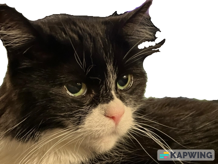
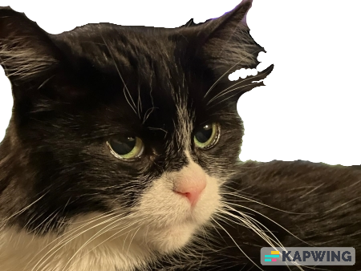

I am Tuxedo
hear me roar


Salutations! My name is Tuxedo and I am officially the best Cat in America. 'How do you know', I hear you ask. Simples, my hooman says I am.
Without fail, every single day at 17.30pm I will meow incessantly until my hoomans provide me with well deserved noms. I do this even though I know that dinner wont be served for another hour. Why do I do this? Well, because it is never too early to feed me, of course.
I have many years experience in covert pooping and a track record of leaving gifts for my hoomans in unexpected places all around the house. In fact, I like to think of the whole world as my litterbox and I can spread pleasure and joy for everyone all across it. I also hold the record for most covert poops in the same place without being discovered (43 poops under the bed in the guest bedroom).
Do you have some hooman food that needs eating? Perhaps some brisket, or steak? Fish even? Need an old piece of fried chicken pulled out of the trash? Do you have a pizza box that needs to be dragged across the floor? Well, I'm your Cat.
Just put that food down wherever you intend to eat and I will tirelessly dodge around, under or over you in order to steal it . Rest assured, I will eat that food before you can.